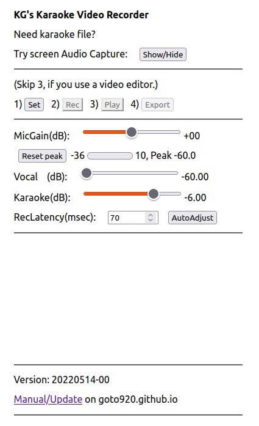
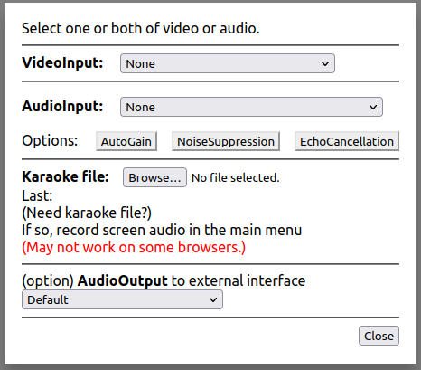

|  |
|
|  |
|
| Platform | screen/window/tab audio capture | Record video w/
play along audio | Sync playback | Export |
|---|---|---|---|---|
| Ubuntu (Linux, PulseAudio) | ||||
| Firefox dev. platform | no support (monitor audio works) | OK | OK | OK |
| Chrome | tab audio only | OK | OK | OK |
| Windows 10 | ||||
| Edge | to be tested | |||
| macOS (M1 CPU) | ||||
| Safari | no support | |||
| Chrome | system audio | |||
| Mobile devices | ||||
| Chrome (Android 7) | no support | |||
| Safari (iOS 12) | no support | |||
| Safari (iPadOS 14) | no support |